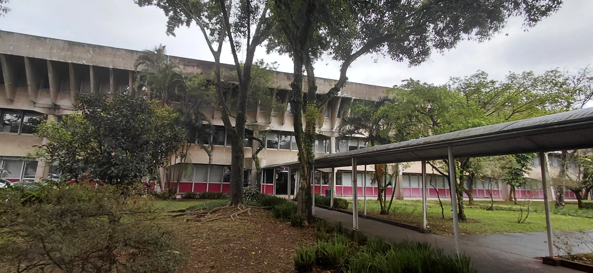

Sistema de
Informações
Acadêmicas
Consulte os indicadores do IME-USP nos sistemas de docentes, graduação e pós-graduação.

Consulte os indicadores do IME-USP nos sistemas de docentes, graduação e pós-graduação.
